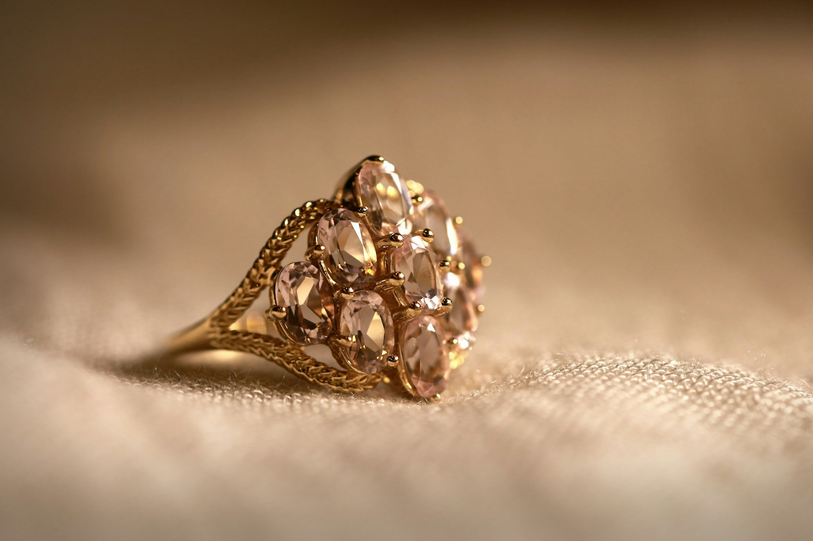
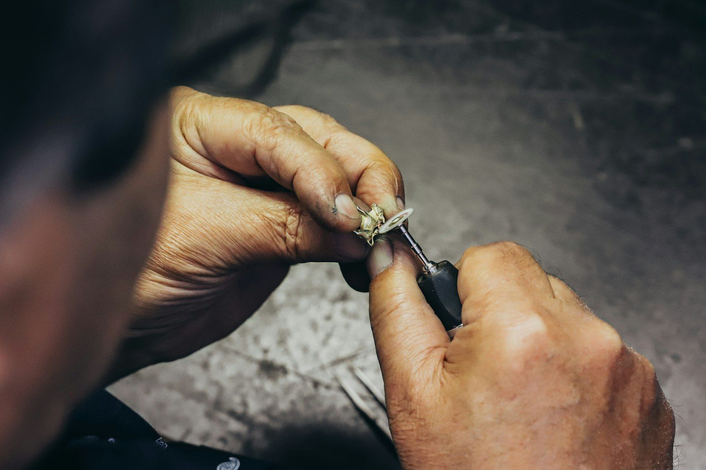
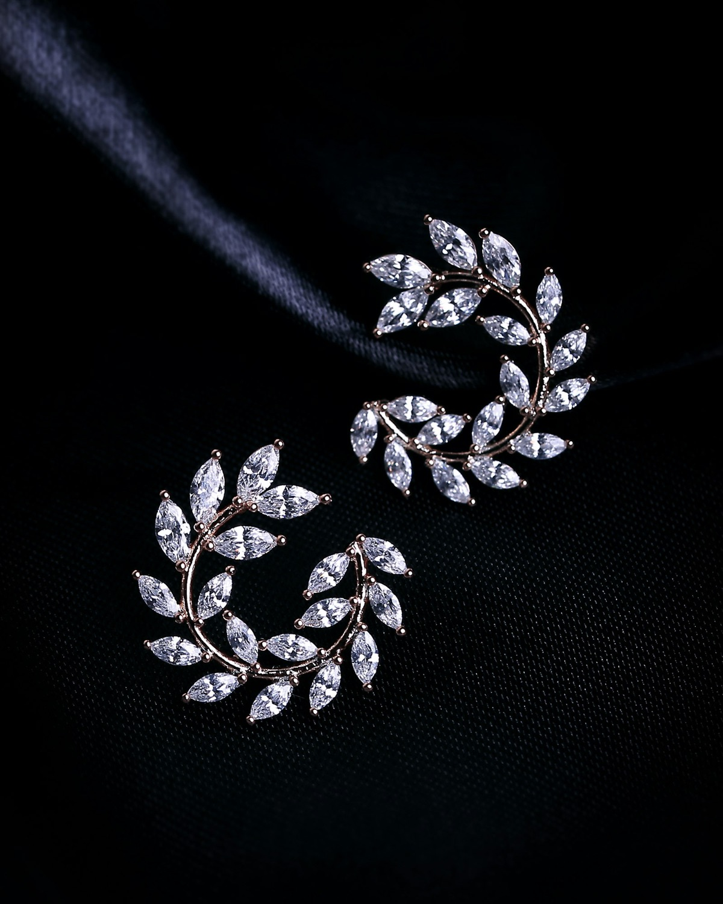
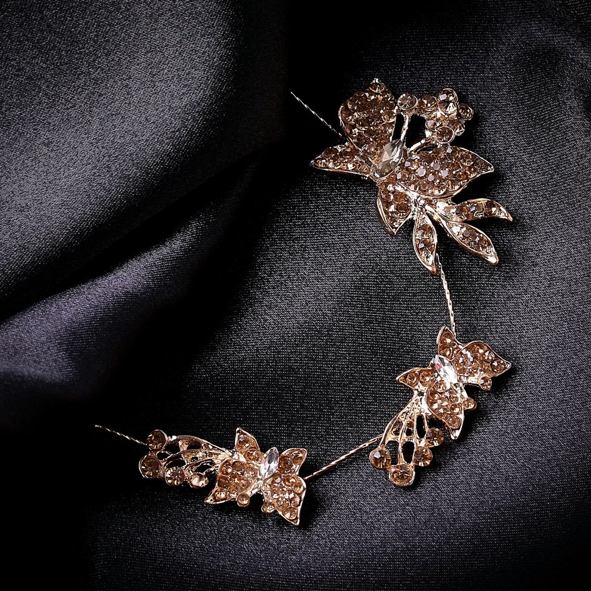
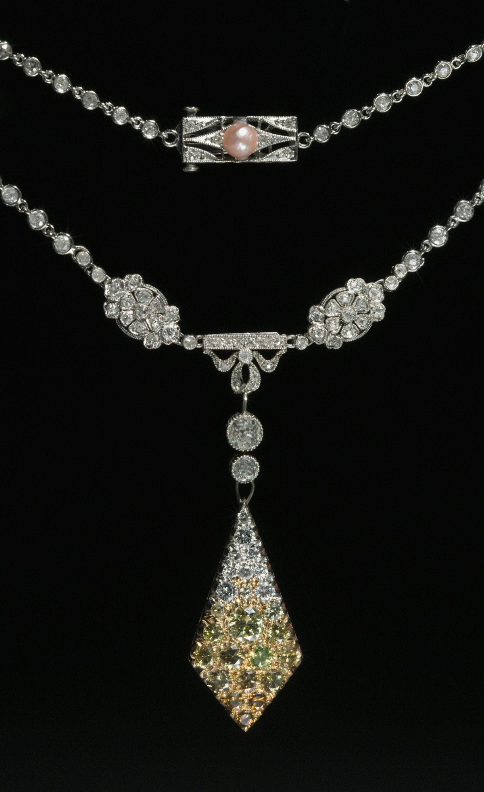
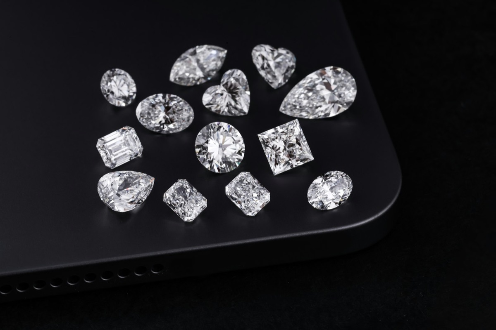
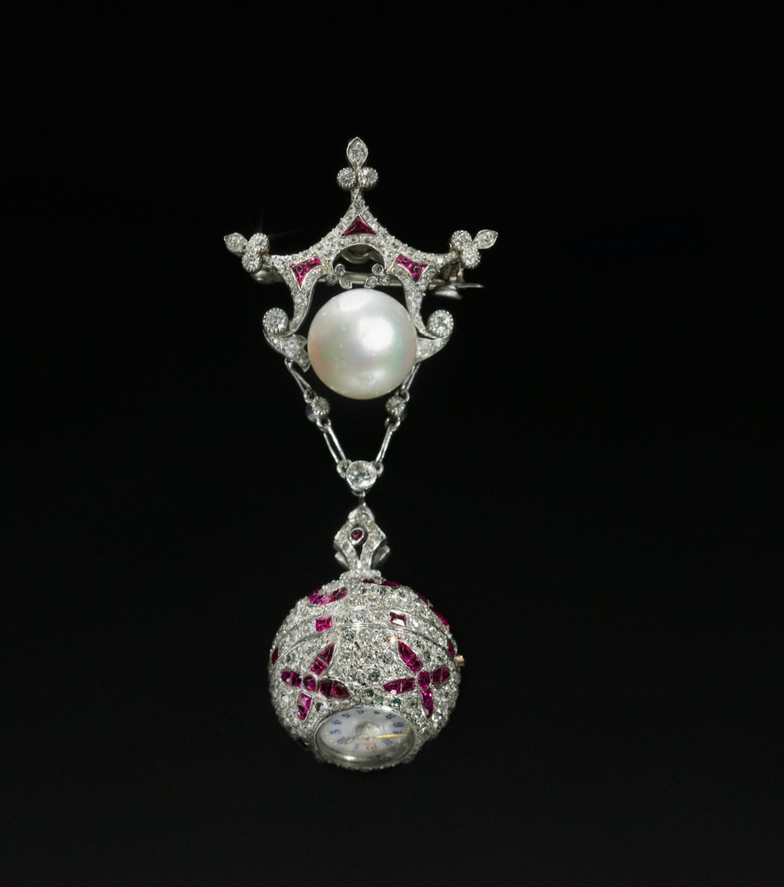
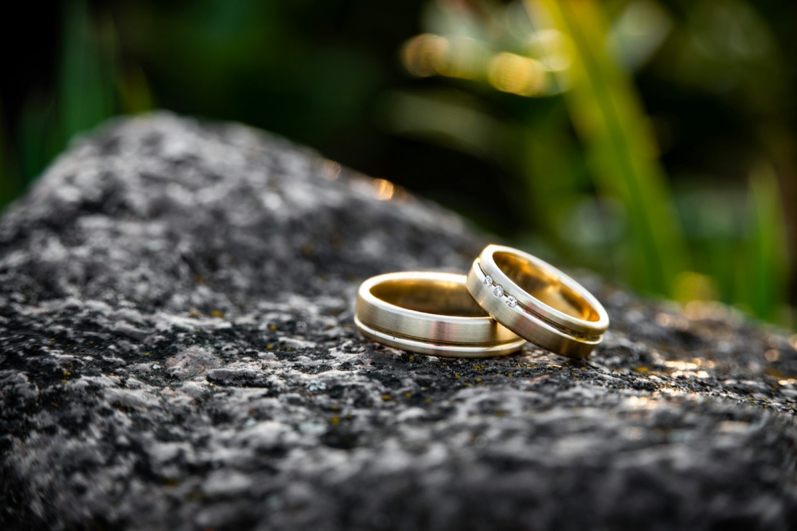
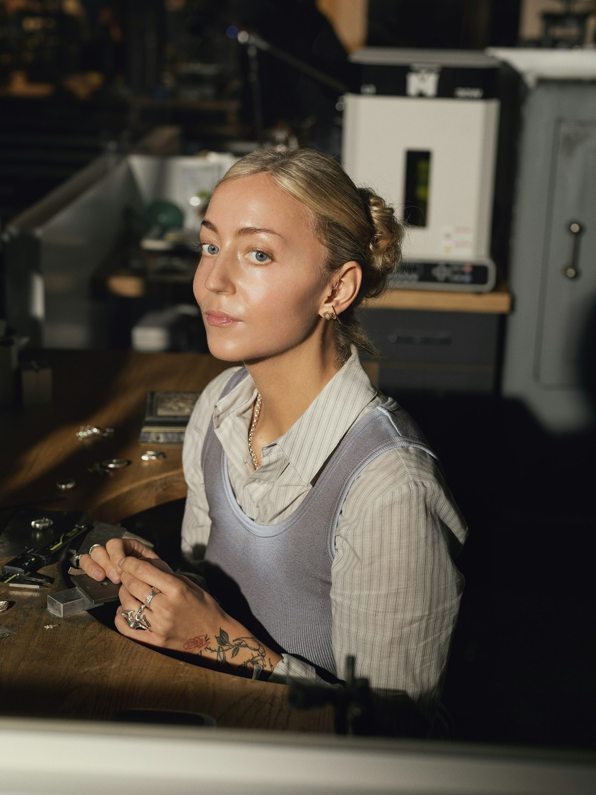
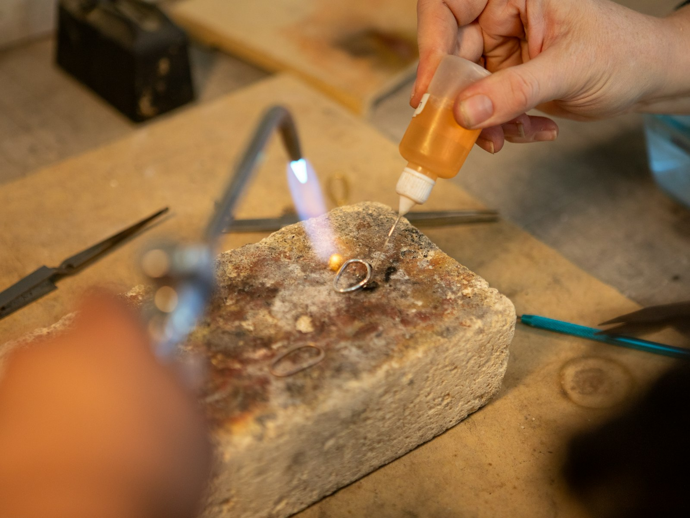

Trauringe
Zwei Ringe, eine Geschichte. Im gemeinsamen Gespräch entstehen Trauringe, die zu Ihnen passen — vom klassischen Gelbgold bis zum Ring aus Platin.
Trauring-Beratung anfragenGoldschmiede · Mosbach
Trauringe, Unikate und behutsame Reparaturen — im Gespräch entworfen, in der Mosbacher Werkstatt von Hand gefertigt. In Gold, Silber und Platin.
Stilwelten
Zwei Ringe, eine Geschichte. Im gemeinsamen Gespräch entstehen Trauringe, die zu Ihnen passen — vom klassischen Gelbgold bis zum Ring aus Platin.
Trauring-Beratung anfragen
Ein Stück, das es nur einmal gibt. Aus Ihrer Idee wird ein Entwurf — und daraus ein Unikat in Gold, Silber oder Platin, gefertigt von Hand.
Unikat-Erstgespräch anfragen
Damit Liebgewonnenes weiterlebt. Ihre Stücke werden sorgfältig geprüft und in der Werkstatt instand gesetzt — vom Verschluss bis zur Ringgröße.
Reparatur-Abgabe vereinbarenZum Ausprobieren
Stilisierte Vorschau — kein Foto des echten Rings.
Gelbgold, mittlere Breite, poliert — diese Kombination sprechen wir gerne im Erstgespräch mit Ihnen durch.
Diese Kombination besprechenGalerie
Beispielhafte Bildwelt (Symbolbilder) — keine Arbeiten der Goldschmiede Glanz und Gloria. Echte Arbeitsproben folgen nach Bildfreigabe.







Das Atelier
Hinter jedem Stück steht ein Gespräch: über den Anlass, über Ideen, über das Material. In der Werkstatt entstehen daraus individuelle Arbeiten in Gold, Silber und Platin — vom Trauring bis zum Unikat.
Statt Vitrinenware aus dem Katalog gibt es hier Handwerk mit Herkunft: entworfen, gefertigt und repariert an der eigenen Werkbank.
Lernen Sie das Atelier kennenDer Weg zum Stück
Wir hören zu: Anlass, Vorstellungen, Rahmen. Gern auch mit Stücken, die Sie mitbringen.
Aus Ideen wird ein Entwurf — und die passende Wahl aus Gold, Silber oder Platin.
Gefertigt an der Werkbank, geprüft im Detail — bis das Stück wirklich sitzt.

Gut zu wissen
In Ruhe und ohne Zeitdruck: Sie erzählen von Ihren Vorstellungen, probieren Formen und Materialien und bekommen eine ehrliche Einschätzung, was zu Ihnen passt. Alles Weitere — Entwurf, Anprobe, Fertigung — folgt Schritt für Schritt.
Oft ja — ob eine Umarbeitung sinnvoll ist, hängt vom Stück ab. Bringen Sie es einfach zum Erstgespräch mit; nach einer Sichtung bekommen Sie eine klare Empfehlung.
Das kommt auf das Stück an. Nach der Abgabe wird es geprüft, und Sie erhalten eine Einschätzung zu Aufwand und Dauer — bevor die Arbeit beginnt.